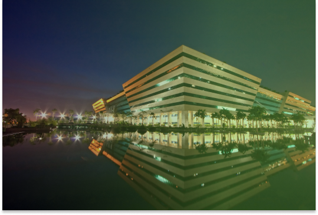

There is no shortage of outstanding casinos in Australia. But for travelers and those who want
to get away for a few days and enjoy a loaded gambling spree, an in-and-out casino may not always be enough.
Thankfully, casino hotels offer the opportunity to hop out of a comfortable bed, have a delicious breakfast
on-site, and take but a few steps to slot machines and table games. Take a break when you need, dip your
toes in the lush pool, and get back to winning money without ever leaving the facility - what a joy. But
while there are hundreds of options for such luxury in Australia, not all offer the same grand experience
you pictured in your head while reading this.
Because a hotel offers gambling entertainment, you’re not always guaranteed the utmost convenience or
quality casino games. Since you pay money for your casino hotel experience, get the best bang for your buck
by ensuring that the qualities of both aspects are balanced. The best way to do that is by comparing
available options, but since there is an unending list of casino hotels in Australia, we’ve narrowed down
the choices leaving you with our favorite picks. The following options will make the hotel stay
unforgettable and offer a gambling experience you won’t forget.

There is no shortage of outstanding casinos in Australia. But for travelers
and
those who want to get away for a few days and enjoy a loaded gambling spree, an in-and-out
casino
may not always be enough. Thankfully, casino hotels offer the opportunity to hop out of a
comfortable bed, have a delicious breakfast on-site, and take but a few steps to slot machines
and
table games. Take a break when you need, dip your toes in the lush pool, and get back to winning
money without ever leaving the facility - what a joy. But while there are hundreds of options
for
such luxury in Australia, not all offer the same grand experience you pictured in your head
while
reading this.
Because a hotel offers gambling entertainment, you’re not always guaranteed the utmost
convenience
or quality casino games. Since you pay money for your casino hotel experience, get the best bang
for
your buck by ensuring that the qualities of both aspects are balanced. The best way to do that
is by
comparing available options, but since there is an unending list of casino hotels in Australia,
we’ve narrowed down the choices leaving you with our favorite picks. The following options will
make
the hotel stay unforgettable and offer a gambling experience you won’t forget.
Monday: 09:00
AM –
05:00 AM
Tuesday: 09:00 AM – 05:00 AMTuesday: 09:00 AM – 05:00 AM